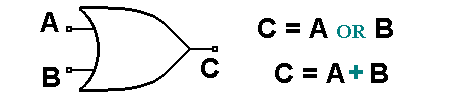

ALGEBRA DE BOOLE Y COMPUERTAS LÓGICAS

El Algebra booleana son reglas algebraicas, basadas en la teoria de conjuntos, para manejar ecuaciones de logica matematica.
La logica matematica trata con proposiciones, elementos de circuitos de dos estados, etc.,
asociados por medio de operadores como Y, O, NO, EXCEPTO, SI...
El Algebra de Boole es un sistema matematico que utiliza variables y operadores logicos. Las variables pueden valer 0 o 1. Y las operaciones basicas son OR(+) y AND(•).
Luego se definen las expresiones de conmutacion como un numero finito de variables y constantes, relacionadas mediante los operadores (AND y OR).
En la ausencia de parentesis, se utilizan las mismas reglas de precedencia, que tienen los operadores suma (OR) y multiplicacion (AND) en el algebra normal
Leyes
En el algebra de Boole se cumplen las siguientes Leyes:
- Conmutatividad:
X + Y = Y + X
Leyes
- Asociatividad:
X + (Y + Z) = (X + Y ) + Z
X • (Y • Z) = (X • Y ) • Z
- Distributividad:
X + (Y • Z) = (X + Y ) • (X + Z)
X • (Y + Z) = (X • Y ) + (X • Z)X • Y = Y • X
- Elementos Neutros (Identidad):
X + 0 = X
X • 1 = X
- Complemento:
X + X = 1
X • X = 0
Dominacion:
X + 1 = 1 X • 0 = 0
Demostracion:
X + 1 = (X + 1) • 1 = (X + 1) • (X + X)
(X + 1) • (X + X) = X + (1 • X) = 1
- Idempotencia:
X + X = X
X • X = X
- Doble complemento:
X = X
- Absorcion:
X + X • Y = X
X • (Y + X) = X
Demostraci´on:
X + X • Y = (X • 1) + (X • Y ) = X • (1 + Y ) = X
- De Morgan:
A • B = A + B
A + B = A • B
- Luego se establecen los siguientes Teoremas:
Teorema de la Simplificacion
A + A • B = A + B
A • (A + B) = A • B
Demostracion:
A • A = 0
A • A + B = B
(A + B) • (A + B) = B
A • (A + B) • (A + B) = A • B
A • (A + B) = A • B
- Teorema del complemento único
Suponemos 2 complementos
para A (A1 y A2)
A + A1 = 1 A + A2 = 1
A • A1 = 0 A • A2 = 0
Luego,
A1 = A1 • 1 = A1 • (A + A2) = A1 • A + A1 • A2
A1 = 0 + A2 • A1
A1 = A • A2 + A1 • A2 = (A + A1) • A2
A1 = 1 • A2 = A2
- Literal:
Es toda ocurrencia de una variable, ya sea complementada o sin complementar, en una expresion de conmutacion.
Por ejemplo, en la expresion de conmutacion:
A • B + C • A + D + B • 1
A, B, C y D son Variables.
A, B, C, A, D y B son Literales.
1 es una Constante.
- Expresion Dual:
Esta expresion se obtiene, intercambiando las operaciones AND por OR (y vice versa), e intercambiando las constantes 0 por 1 y 1 por 0 en la expresion de
conmutacion.
Por ejemplo, para la expresion de conmutacion:
(A • B) + (C • D) + 0
La Expresi´on Dual es:
(A + B) • (C + D) • 1
- Las funciones de conmutacion se pueden expresar:
de Forma Algebraica, mediante una Tabla de Verdad o en Forma Canonica.
La manera mas didactica de representar una funcion de conmutacion es mediante una Tabla de Verdad, ya que en ella se muestran los valores de salida para cada combinacion de valor de entrada.
Las Tablas de Verdad permiten modelar los Sistemas Combinacionales.
Dada una tabla de verdad tambien es posible obtener la forma algebraica.
Existen 2 metodos para identificar la forma algebraica: la forma normal disyuntiva y la forma normal conjuntiva.
En el caso de la forma normal disyuntiva, es necesario identificar los 1’s que resultan de la tabla de verdad y formar los terminos (conjunciones fundamentales) que los representan.
Para formar las conjunciones fundamentales, se usa la variable complementada si para esa combinacion tiene un cero, o se deja sin complementar, si en la combinacion hay un 1.
- Suma de conjunciones fundamentales, resultando la forma normal disyuntiva:
f (X1,X2,X3) = X1 • X2 • X3+X1 • X2 • X3+X1 • X2 • X3
+X1 • X2 • X3+X1 • X2 • X3
Estos terminos formados por todas las variables conectadas mediante operadores AND se denominan minterminos (conjunciones fundamentales)..
Como la funcion de conmutacion corresponde a un OR de todos los minterminos, se puede expresar tambien de la forma canonica (OR canonico de AND).
F(X1,X2,X3) = Xm (m0,m1, . . . ,mn)
Para la representacion de la forma canonica, se utilizan las
posiciones de los minterminos en la Tabla de Verdad.
Para el ejemplo anterior resulta:
f (X1,X2,X3) =P m(2, 4, 5, 6, 7)
En el caso de la forma normal conjuntiva, se opera de manera contraria a la vista anteriormente.
En este caso es necesario identificar los 0’s que resultan de la tabla de verdad y formar los terminos (disyunciones fundamentales o maxterminos) que los representan.
Se dice que dos funciones de conmutacion son equivalentes si tienen expansiones en forma canonica identicas. Es decir, que tienen valores de salida identicos para las mismas combinaciones de entrada.
Dicho de otra manera, dos funciones de conmutacion son equivalentes si tienen la misma tabla de verdad.
¿Cuantas funciones distintas (No equivalentes) existen para un numero n de variables?
22n
Esto se puede demostrar facilmente, construyendo tablas de verdad y basandose en que las funciones no equivalentes tienen tablas de verdad distintas.
gunos operadores...
NOT F(X1) = X1
AND F(X1,X2) = X1 • X2
OR F(X1,X2) = X1 + X2
NAND F(X1,X2) = X1 • X2 = X1 + X2
NOR F(X1,X2) = X1 + X2 = X1 • X2
XAND F(X1,X2) = X1 • X2 + X1 • X2
XOR F(X1,X2) = X1 • X2 + X1 • X2
Se dice que un conjunto de operadores es funcionalmente completo si se puede expresar cualquier funcion de conmutacion, utilizando solo los operadores del conjunto.
Por ejemplo el conjunto {AND, OR, NOT} es funcionalmente completo por definicion del algebra. Sin embargo el conjunto {AND, NOT} tambien lo es.
Otros conjuntos funcionalmente completos son: {NOR} y {NAND}.
COMPUERTAS LOGICAS /ALBEGRA DE BOOLE
El Algebra booleana difiere de manera importante del Algebra ordinaria en que las constantes y variables booleanas solo pueden tener dos valores posibles, 0 o 1.
Una variable booleana es una cantidad que puede, en diferentes ocasiones, ser igual a o a 1.
Las variables booleanas se emplean con frecuencia para representar el nivel de voltaje presente en un alambre o en las terminales de entrada y de salida de un circuito.
Asi pues, el 0 y el 1 booleanos no representan numeros sino que en su lugar representan el estado de una variable de voltaje o bien lo que se conoce como su nivel logico.
Se dice que un voltaje digital en un circuito digital de encuentra en nivel logico 0 ó en el 1, segun su valor numerico real.
En el algebra booleana no hay fracciones, decimales, numeros negativos, raices cuadradas, logaritmos, numeros imaginarios, etc.
De hecho en el algebra booleana solo existen tres operaciones basicas. OR, AND y NOT.
ESTAS OPERACIONES BASICAS SE LLAMAN OPERACIONES LOGICAS.
ES POSIBLE CONSTRUIR DIGITALES LLAMADOS COMPUERTAS LOGICAS que con diodos, transistores y resistencias conectados de cierta manera hacen que
la salida del circuito sea el resultado de una operacion logica basica (AND, OR, NOT) sobre la entrada.
EL ALGEBRA DE BOOLE ES UTILIZADA PARA CONSTRUIR LAS COMPUERTAS LOGICAS QUE CONSTITUYEN UN CIRCUITO COMBINACIONAL.
COMPUERTA OR

En un circuito digital la compuerta OR es un circuito que tiene dos o mas entradas y cuya salida es igual a la suma OR de las entradas,
El simbolo correspondiente a una compuerta OR de dos entradas. Las entradas A y B son niveles de voltaje logicos y la salida x es un valor
de voltaje logico cuyo valor es el resultado de la operacion OR de A y B;
. Compuerta AND
Si dos variables logicas A y B se combinan mediante la expresion AND, el resultado x, se puede expresar como:
En esta expresion el signo " representa la operacion bolean de AND, cuyas reglas se dan en la tabla de verdad mostrada anteriormente.
Al observar la tabla, se advierte que la operación AND es exactamente igual que la multiplicación ordinaria. Siempre que A o B sean cero,
su producto sera cero; cuando A y B sean 1, su producto sera 1. Por tanto, podemos decir que en la operacion AND el resultado sera 1 sólo si todas las entradas son 1;
en los demas casos el resultado sera 0.
La expresion se lee “x es igual a A AND B”. El signo de multiplicacion por lo general se omite como en el algebra ordinaria,
Compuerta NOT
La operación NOT difiere de las operaciones OR y AND en que esta puede efectuarse con una sola variable de entrada.
Por ejemplo, si la variable A se somete a la operación NOT, el resultado x se puede expresar como:
Donde la barra sobrepuesta representa la operación NOT. Esta expresion se lee “x es igual a NO A” o “x es igual a la inversa de A”,
o tambien “x es igual al complemento de A”. Cada una de estas se utiliza frecuentemente y todas indican que el valor
logico de es opuesto al valor logico de A. La tabla de la verdad mostrada previamente aclara los casos de esta operacion.
COMPUERTA NAND
La compuerta NAND es un dispositivo de dos o mas entradas y una salida que equivale a una compuerta AND seguida de un negador
(NOT AND = NAND). Cumple con la condicion que la salida toma el valor lgico 0 si, y solo si todas las entradas valen 1.
Si no la salida toma el valor 1. Se representa como una compuerta AND seguida de un circulo que denota la negacion
EN CONCLUSION
Solo 0 y 1 son los valores posibles en el algebra booleana. En la operacion OR el resultado sera 1 si una o más variables es 1.
El signo mas denota la operacion OR y no la adicion ordinaria. La operación OR genera un resultado de 0 solo cuando todas las variables de entrada son 0.
En la operacion AND esta se ejecuta exactamente igual que la multiplicacion ordinaria de unos y ceros.
Una salida igual a 1 ocurre sólo cuando en el caso de que todas las entradas sean 1. La salida es cero en cualquier caso donde una o mas entradas sean 0.
El INVERSOR Es un circuito que siempre tiene una sola entrada y su nivel logico de salida es siempre contrario al nivel logico de la entrada.
Al dejar una parta del integrado arriba esta se muestra como un 1 lógico.
Al polarizar de manera incorrecta el integrado se quema de manera automática.
ALGEBRA DE BOOLE Y COMPUERTAS LÓGICAS
La logica matematica trata con proposiciones, elementos de circuitos de dos estados, etc., asociados por medio de operadores como Y, O, NO, EXCEPTO, SI...
El Algebra de Boole es un sistema matematico que utiliza variables y operadores logicos. Las variables pueden valer 0 o 1. Y las operaciones basicas son OR(+) y AND(•).
Luego se definen las expresiones de conmutacion como un numero finito de variables y constantes, relacionadas mediante los operadores (AND y OR).
En la ausencia de parentesis, se utilizan las mismas reglas de precedencia, que tienen los operadores suma (OR) y multiplicacion (AND) en el algebra normal
Leyes
X + Y = Y + X
Leyes
X + (Y + Z) = (X + Y ) + Z
X • (Y • Z) = (X • Y ) • Z
X + (Y • Z) = (X + Y ) • (X + Z)
X • (Y + Z) = (X • Y ) + (X • Z)X • Y = Y • X
X + 0 = X
X • 1 = X
X + X = 1
X • X = 0
Dominacion:
X + 1 = 1 X • 0 = 0
Demostracion:
X + 1 = (X + 1) • 1 = (X + 1) • (X + X)
(X + 1) • (X + X) = X + (1 • X) = 1
X + X = X
X • X = X
X = X
X + X • Y = X
X • (Y + X) = X
Demostraci´on:
X + X • Y = (X • 1) + (X • Y ) = X • (1 + Y ) = X
A • B = A + B
A + B = A • B
Teorema de la Simplificacion
A + A • B = A + B
A • (A + B) = A • B
Demostracion:
A • A = 0
A • A + B = B
(A + B) • (A + B) = B
A • (A + B) • (A + B) = A • B
A • (A + B) = A • B
Suponemos 2 complementos
para A (A1 y A2)
A + A1 = 1 A + A2 = 1
A • A1 = 0 A • A2 = 0
Luego,
A1 = A1 • 1 = A1 • (A + A2) = A1 • A + A1 • A2
A1 = 0 + A2 • A1
A1 = A • A2 + A1 • A2 = (A + A1) • A2
A1 = 1 • A2 = A2
Es toda ocurrencia de una variable, ya sea complementada o sin complementar, en una expresion de conmutacion.
Por ejemplo, en la expresion de conmutacion:
A • B + C • A + D + B • 1
A, B, C y D son Variables.
A, B, C, A, D y B son Literales.
1 es una Constante.
Esta expresion se obtiene, intercambiando las operaciones AND por OR (y vice versa), e intercambiando las constantes 0 por 1 y 1 por 0 en la expresion de conmutacion.
Por ejemplo, para la expresion de conmutacion:
(A • B) + (C • D) + 0
La Expresi´on Dual es:
(A + B) • (C + D) • 1
de Forma Algebraica, mediante una Tabla de Verdad o en Forma Canonica.
La manera mas didactica de representar una funcion de conmutacion es mediante una Tabla de Verdad, ya que en ella se muestran los valores de salida para cada combinacion de valor de entrada.
Las Tablas de Verdad permiten modelar los Sistemas Combinacionales.
Dada una tabla de verdad tambien es posible obtener la forma algebraica.
Existen 2 metodos para identificar la forma algebraica: la forma normal disyuntiva y la forma normal conjuntiva.
En el caso de la forma normal disyuntiva, es necesario identificar los 1’s que resultan de la tabla de verdad y formar los terminos (conjunciones fundamentales) que los representan. Para formar las conjunciones fundamentales, se usa la variable complementada si para esa combinacion tiene un cero, o se deja sin complementar, si en la combinacion hay un 1.
f (X1,X2,X3) = X1 • X2 • X3+X1 • X2 • X3+X1 • X2 • X3
+X1 • X2 • X3+X1 • X2 • X3
Estos terminos formados por todas las variables conectadas mediante operadores AND se denominan minterminos (conjunciones fundamentales)..
Como la funcion de conmutacion corresponde a un OR de todos los minterminos, se puede expresar tambien de la forma canonica (OR canonico de AND). F(X1,X2,X3) = Xm (m0,m1, . . . ,mn)
Para la representacion de la forma canonica, se utilizan las posiciones de los minterminos en la Tabla de Verdad.
Para el ejemplo anterior resulta:
f (X1,X2,X3) =P m(2, 4, 5, 6, 7)
En el caso de la forma normal conjuntiva, se opera de manera contraria a la vista anteriormente.
En este caso es necesario identificar los 0’s que resultan de la tabla de verdad y formar los terminos (disyunciones fundamentales o maxterminos) que los representan.
Se dice que dos funciones de conmutacion son equivalentes si tienen expansiones en forma canonica identicas. Es decir, que tienen valores de salida identicos para las mismas combinaciones de entrada.
Dicho de otra manera, dos funciones de conmutacion son equivalentes si tienen la misma tabla de verdad. ¿Cuantas funciones distintas (No equivalentes) existen para un numero n de variables?
22n
Esto se puede demostrar facilmente, construyendo tablas de verdad y basandose en que las funciones no equivalentes tienen tablas de verdad distintas. gunos operadores...
NOT F(X1) = X1
AND F(X1,X2) = X1 • X2
OR F(X1,X2) = X1 + X2
NAND F(X1,X2) = X1 • X2 = X1 + X2
NOR F(X1,X2) = X1 + X2 = X1 • X2
XAND F(X1,X2) = X1 • X2 + X1 • X2
XOR F(X1,X2) = X1 • X2 + X1 • X2
Se dice que un conjunto de operadores es funcionalmente completo si se puede expresar cualquier funcion de conmutacion, utilizando solo los operadores del conjunto. Por ejemplo el conjunto {AND, OR, NOT} es funcionalmente completo por definicion del algebra. Sin embargo el conjunto {AND, NOT} tambien lo es.
Otros conjuntos funcionalmente completos son: {NOR} y {NAND}.
COMPUERTAS LOGICAS /ALBEGRA DE BOOLE
Asi pues, el 0 y el 1 booleanos no representan numeros sino que en su lugar representan el estado de una variable de voltaje o bien lo que se conoce como su nivel logico. Se dice que un voltaje digital en un circuito digital de encuentra en nivel logico 0 ó en el 1, segun su valor numerico real. En el algebra booleana no hay fracciones, decimales, numeros negativos, raices cuadradas, logaritmos, numeros imaginarios, etc. De hecho en el algebra booleana solo existen tres operaciones basicas. OR, AND y NOT.
ESTAS OPERACIONES BASICAS SE LLAMAN OPERACIONES LOGICAS. ES POSIBLE CONSTRUIR DIGITALES LLAMADOS COMPUERTAS LOGICAS que con diodos, transistores y resistencias conectados de cierta manera hacen que la salida del circuito sea el resultado de una operacion logica basica (AND, OR, NOT) sobre la entrada.
EL ALGEBRA DE BOOLE ES UTILIZADA PARA CONSTRUIR LAS COMPUERTAS LOGICAS QUE CONSTITUYEN UN CIRCUITO COMBINACIONAL.
COMPUERTA OR
En un circuito digital la compuerta OR es un circuito que tiene dos o mas entradas y cuya salida es igual a la suma OR de las entradas, El simbolo correspondiente a una compuerta OR de dos entradas. Las entradas A y B son niveles de voltaje logicos y la salida x es un valor de voltaje logico cuyo valor es el resultado de la operacion OR de A y B;
. Compuerta AND
Si dos variables logicas A y B se combinan mediante la expresion AND, el resultado x, se puede expresar como:
En esta expresion el signo " representa la operacion bolean de AND, cuyas reglas se dan en la tabla de verdad mostrada anteriormente. Al observar la tabla, se advierte que la operación AND es exactamente igual que la multiplicación ordinaria. Siempre que A o B sean cero, su producto sera cero; cuando A y B sean 1, su producto sera 1. Por tanto, podemos decir que en la operacion AND el resultado sera 1 sólo si todas las entradas son 1; en los demas casos el resultado sera 0.
La expresion se lee “x es igual a A AND B”. El signo de multiplicacion por lo general se omite como en el algebra ordinaria,
Compuerta NOT
La operación NOT difiere de las operaciones OR y AND en que esta puede efectuarse con una sola variable de entrada. Por ejemplo, si la variable A se somete a la operación NOT, el resultado x se puede expresar como:
Donde la barra sobrepuesta representa la operación NOT. Esta expresion se lee “x es igual a NO A” o “x es igual a la inversa de A”, o tambien “x es igual al complemento de A”. Cada una de estas se utiliza frecuentemente y todas indican que el valor logico de es opuesto al valor logico de A. La tabla de la verdad mostrada previamente aclara los casos de esta operacion.
COMPUERTA NAND
La compuerta NAND es un dispositivo de dos o mas entradas y una salida que equivale a una compuerta AND seguida de un negador (NOT AND = NAND). Cumple con la condicion que la salida toma el valor lgico 0 si, y solo si todas las entradas valen 1. Si no la salida toma el valor 1. Se representa como una compuerta AND seguida de un circulo que denota la negacion
EN CONCLUSION
Solo 0 y 1 son los valores posibles en el algebra booleana. En la operacion OR el resultado sera 1 si una o más variables es 1. El signo mas denota la operacion OR y no la adicion ordinaria. La operación OR genera un resultado de 0 solo cuando todas las variables de entrada son 0.
En la operacion AND esta se ejecuta exactamente igual que la multiplicacion ordinaria de unos y ceros. Una salida igual a 1 ocurre sólo cuando en el caso de que todas las entradas sean 1. La salida es cero en cualquier caso donde una o mas entradas sean 0.
El INVERSOR Es un circuito que siempre tiene una sola entrada y su nivel logico de salida es siempre contrario al nivel logico de la entrada.
Al dejar una parta del integrado arriba esta se muestra como un 1 lógico.
Al polarizar de manera incorrecta el integrado se quema de manera automática.